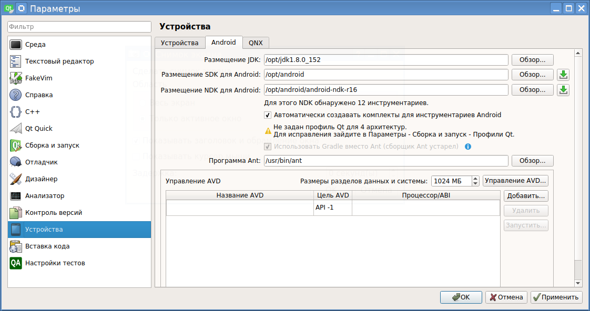

Для работы с Android, Qt 5.9.2 требует наличие в системе Android SDK и NDK.
Установка Android SDK
С момента появления среды разработки Android Studio, принцип получения и установки пакета Android SDK поменялся. Устаревшая страница с SDK:
http://developer.android.com/sdk/index.html
... теперь перенаправляется на страницу:
https://developer.android.com/studio/index.html
То есть, теперь просто так получить SDK невозможно. Он идет либо в комплекте со средой разработки Android Studio, либо его можно попробовать установить через специальную программу sdkmanager, который входит в состав набора программ, именуемый Android SDK Tools package. Этот набор программ можно скачать внизу страницы Android Studio. Прямая ссылка:
https://dl.google.com/android/repository/sdk-tools-linux-3859397.zip
После скачивания, можно создать, например, каталог /opt/android, и распаковать в него данный архив. Программа sdkmanager будет лежать по пути:
/opt/android/tools/bin/sdkmanager
Для получения списка пакетов, которые может устанавливать/удалять sdkmanager, можно дать команду:
./sdkmanager --list
Будет выведено три списка:
Вроде как, чтобы установить то, что раньше входило в Android SDK, надо установить такие пакеты:
Установка делается следующей командой:
./sdkmanager "build-tools;27.0.1" "platforms;android-27" "platform-tools" "emulator"
Вот такой синтаксис. Для установки даже не предусмотрена опция --install. Результат инсталляции должен выглядеть вот так:
$ ./sdkmanager --list
Installed packages:
Path | Version | Description | Location
------- | ------- | ------- | -------
build-tools;27.0.1 | 27.0.1 | Android SDK Build-Tools 27.0.1 | build-tools/27.0.1/
emulator | 26.1.4 | Android Emulator | emulator/
patcher;v4 | 1 | SDK Patch Applier v4 | patcher/v4/
platform-tools | 26.0.2 | Android SDK Platform-Tools | platform-tools/
platforms;android-27 | 1 | Android SDK Platform 27 | platforms/android-27/
tools | 26.0.1 | Android SDK Tools 26.0.1 | tools/
После инсталляции появятся следующие каталоги:
/opt/android/build-tools
/opt/android/emulator
/opt/android/licenses
/opt/android/platform-tools
/opt/android/platforms
Можно считать, что Android Software Development Kit установлен.
Установка Android NDK
Android NDK можно получить на этой странице:
https://developer.android.com/ndk/downloads/index.html
Содержимое данного архива тоже надо распаковать в каталог /opt/android, получится каталог, например /opt/android/android-ndk-r16.
Конфигурирование Qt Creator 4.4.1
Для конфигурирования необходимо знать пути до трех компонентов:
Примечание:
Итоговые пути будут такими:
Android SDK: /opt/android/
Android NDK: /opt/android/android-ndk-r16
Java JDK: /opt/jdk1.8.0_152
Окно настройки выглядит так:

После задания этих путей в меню Инструменты - Параметры -Устройства - Вкладка Android, настройку можно считать законченой.
Настройка сделана. А будет ли все это работать?
Тут начинаются какие-то непонятки. Вроде бы говорят, что Qt Creator 4.4.0 и 4.4.1 имеют какой-то встроенный баг, из-за которого не видятся виртуальные AVD-устройства.
И модератор говорит, что исправлено будет только в версии 4.5:
According to the bug report, this issue will be fixed in Qt Creator 4.5, so it will take some serious time.
На практике проблема еще сложнее. Даже если есть физическое Android устройство, то все равно не работает компиляция под Android в режиме Debug. В режиме релиза сборка работает, и даже полученный apk можно залить вручную на устройство, и приложение успешно устанавливается и запускается.
А при компиляции в режиме отладки возникают вот такие ошибки:
16:30:41: Запускается: «/usr/bin/make»
/opt/android/android-ndk-r16/toolchains/arm-linux-androideabi-4.9/prebuilt/linux-x86_64/bin/arm-linux-androideabi-g++ -c -D__ANDROID_API__=16 --sysroot=/opt/android/android-ndk-r16/sysroot -isystem /opt/android/android-ndk-r16/sysroot/usr/include/arm-linux-androideabi -isystem /opt/android/android-ndk-r16/sources/cxx-stl/gnu-libstdc++/4.9/include -isystem /opt/android/android-ndk-r16/sources/cxx-stl/gnu-libstdc++/4.9/libs/armeabi-v7a/include -fstack-protector-strong -DANDROID -march=armv7-a -mfloat-abi=softfp -mfpu=vfp -fno-builtin-memmove -g -g -marm -O0 -Wall -W -D_REENTRANT -fPIC -DQT_QML_DEBUG -DQT_QUICK_LIB -DQT_GUI_LIB -DQT_QML_LIB -DQT_NETWORK_LIB -DQT_CORE_LIB -I. -I. -I/opt/qt_5_9_2/5.9.2/android_armv7/include -I/opt/qt_5_9_2/5.9.2/android_armv7/include/QtQuick -I/opt/qt_5_9_2/5.9.2/android_armv7/include/QtGui -I/opt/qt_5_9_2/5.9.2/android_armv7/include/QtQml -I/opt/qt_5_9_2/5.9.2/android_armv7/include/QtNetwork -I/opt/qt_5_9_2/5.9.2/android_armv7/include/QtCore -I. -I/opt/qt_5_9_2/5.9.2/android_armv7/mkspecs/android-g++ -o main.o main.cpp
In file included from /opt/android/android-ndk-r16/sources/cxx-stl/gnu-libstdc++/4.9/include/type_traits:35:0,
from /opt/qt_5_9_2/5.9.2/android_armv7/include/QtCore/qglobal.h:45,
from /opt/qt_5_9_2/5.9.2/android_armv7/include/QtGui/qtguiglobal.h:43,
from /opt/qt_5_9_2/5.9.2/android_armv7/include/QtGui/qguiapplication.h:43,
from /opt/qt_5_9_2/5.9.2/android_armv7/include/QtGui/QGuiApplication:1,
from main.cpp:51:
/opt/android/android-ndk-r16/sources/cxx-stl/gnu-libstdc++/4.9/include/bits/c++0x_warning.h:32:2: error: #error This file requires compiler and library support for the ISO C++ 2011 standard. This support is currently experimental, and must be enabled with the -std=c++11 or -std=gnu++11 compiler options.
#error This file requires compiler and library support for the \
^
In file included from /opt/qt_5_9_2/5.9.2/android_armv7/include/QtCore/qglobal.h:98:0,
from /opt/qt_5_9_2/5.9.2/android_armv7/include/QtGui/qtguiglobal.h:43,
from /opt/qt_5_9_2/5.9.2/android_armv7/include/QtGui/qguiapplication.h:43,
from /opt/qt_5_9_2/5.9.2/android_armv7/include/QtGui/QGuiApplication:1,
from main.cpp:51:
/opt/qt_5_9_2/5.9.2/android_armv7/include/QtCore/qcompilerdetection.h:567:6: error: #error Qt requires a C++11 compiler and yours does not seem to be that.
# error Qt requires a C++11 compiler and yours does not seem to be that.
^
In file included from /opt/qt_5_9_2/5.9.2/android_armv7/include/QtCore/qatomic.h:46:0,
from /opt/qt_5_9_2/5.9.2/android_armv7/include/QtCore/qglobal.h:1158,
from /opt/qt_5_9_2/5.9.2/android_armv7/include/QtGui/qtguiglobal.h:43,
from /opt/qt_5_9_2/5.9.2/android_armv7/include/QtGui/qguiapplication.h:43,
from /opt/qt_5_9_2/5.9.2/android_armv7/include/QtGui/QGuiApplication:1,
from main.cpp:51:
/opt/qt_5_9_2/5.9.2/android_armv7/include/QtCore/qbasicatomic.h:61:4: error: #error "Qt requires C++11 support"
# error "Qt requires C++11 support"
^
In file included from /opt/qt_5_9_2/5.9.2/android_armv7/include/QtCore/qstring.h:48:0,
from /opt/qt_5_9_2/5.9.2/android_armv7/include/QtCore/qcoreapplication.h:44,
from /opt/qt_5_9_2/5.9.2/android_armv7/include/QtGui/qguiapplication.h:44,
from /opt/qt_5_9_2/5.9.2/android_armv7/include/QtGui/QGuiApplication:1,
from main.cpp:51:
/opt/qt_5_9_2/5.9.2/android_armv7/include/QtCore/qchar.h:587:1: warning: identifier 'nullptr' is a keyword in C++11 [-Wc++0x-compat]
Q_DECL_CONSTEXPR inline bool operator!=(QChar lhs, std::nullptr_t) Q_DECL_NOTHROW { return !operator==(lhs, nullptr); }
^
In file included from /opt/qt_5_9_2/5.9.2/android_armv7/include/QtCore/qobjectdefs.h:50:0,
from /opt/qt_5_9_2/5.9.2/android_armv7/include/QtCore/qobject.h:46,
from /opt/qt_5_9_2/5.9.2/android_armv7/include/QtCore/qcoreapplication.h:46,
from /opt/qt_5_9_2/5.9.2/android_armv7/include/QtGui/qguiapplication.h:44,
from /opt/qt_5_9_2/5.9.2/android_armv7/include/QtGui/QGuiApplication:1,
from main.cpp:51:
/opt/qt_5_9_2/5.9.2/android_armv7/include/QtCore/qobjectdefs_impl.h:339:9: warning: identifier 'decltype' is a keyword in C++11 [-Wc++0x-compat]
template <typename F> static auto test(F f) -> decltype(((f.operator()((dummy<ArgList>())...)), int()));
^
In file included from /opt/qt_5_9_2/5.9.2/android_armv7/include/QtGui/qtguiglobal.h:43:0,
from /opt/qt_5_9_2/5.9.2/android_armv7/include/QtGui/qguiapplication.h:43,
from /opt/qt_5_9_2/5.9.2/android_armv7/include/QtGui/QGuiApplication:1,
from main.cpp:51:
/opt/qt_5_9_2/5.9.2/android_armv7/include/QtCore/qglobal.h:927:23: error: expected ',' or '...' before '&&' token
void qAsConst(const T &&) Q_DECL_EQ_DELETE;
^
/opt/qt_5_9_2/5.9.2/android_armv7/include/QtCore/qglobal.h:938:25: error: expected ',' or '...' before '&&' token
QForeachContainer(T &&t) : c(std::move(t)), i(qAsConst(c).begin()), e(qAsConst(c).end()) {}
Чтобы заработала компиляция в режиме отладки, можно прописать в файле проекта *.pro опцию:
QMAKE_CXXFLAGS += -std=c++11
После чего сборка программы работает, и заливка на реальное устройство тоже сработает.
Для того, чтобы заработала отладка на устройстве, на самом устройстве надо сделать две настройки:
1. Включить опцию "Отладка по USB"
2. Выключить опцию "Мониторинг приложений, установленных через ADB". Потому что описание этой опции звучит так: "Запрашивать подтверждение пользователя при установке через ADB". Если появится запрос на подтверждение пользователя, QtCreator не сможет нормально запустить процесс отладки, и застрянет где-то на этапе:
Running command "/opt/android/platform-tools/adb -s X9L021493 install -r /opt/qt_5_9_2/Examples/Qt-5.9.2/quickcontrols/extras/dashboard/android-build//build/outputs/apk/android-build-debug.apk"
...
[ 56%] /data/local/tmp/android-build-debug.apk
После таких настроек появится возможность отлаживаться на реальном устройстве.
В QtCreator 4.4.0 и 4.4.1 есть проблема: он не видит виртуальные Андроид-устройства (AVD). Связано это с тем, что опять поменяли поведение консольных утилит из пакета android-tools, и QtCreator теперь не может разобрать выхлоп списка AVD. И, похоже, эта проблема будет решена только в версии 4.5. Поэтому отладка на AVD пока остается под вопросом.